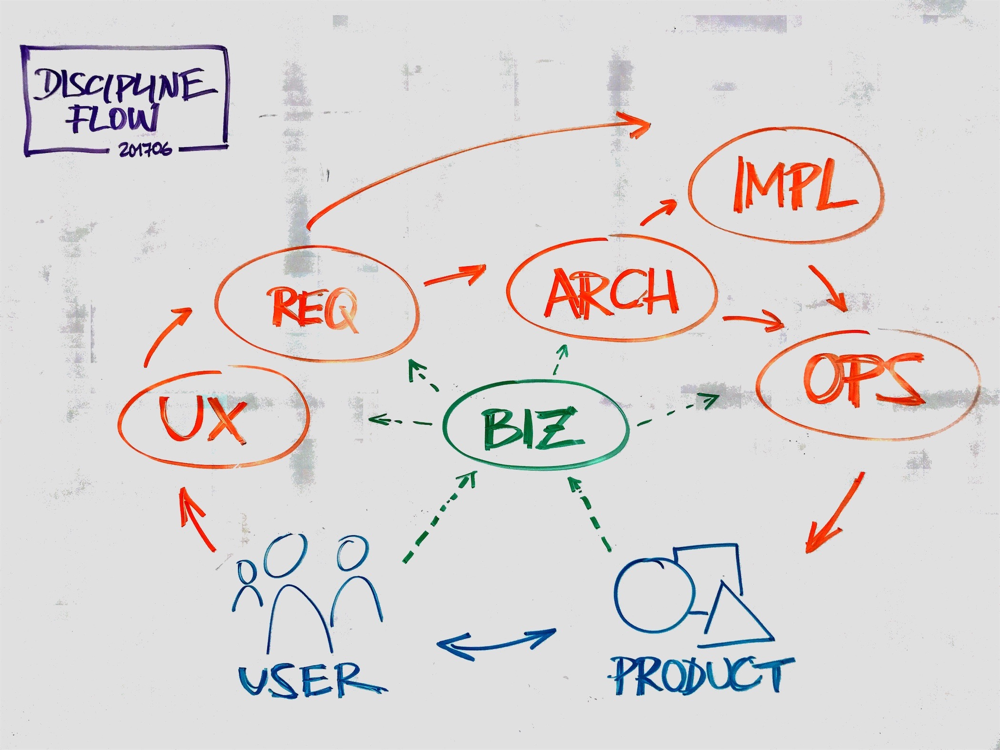

Discipline flow (Stephan Janisch)
Product conception, development and delivery is a highly interdisciplinary team endeavour. Anybody who has ever participated in a more or less complete product lifecycle knows that not only are the languages each discipline uses quite different, but also the results each discipline obtains may not always be compatible in the manner intended.
The discipline flow tackles this by relating the engineering disciplines to one another in a general product lifecycle context. Its core use case is to get a comprehensive overview of the disciplines and flows required for product conception, development and delivery - from user needs to business goals to the product as delivered by operations to the final user.
The basic model
The very first step of any kind of meaningful product development must take the user as well as the business goals into account and, by this means, allow for continuous delivery of product increments. Relationships between the Business (BUS), Customer Experience (CX), User Experience (UX), Requirements (REQ), Architecture (ARCH), Implementation (IMPL) and Operations (OPS) define the basic flow model to achieve this.

The various disciplines concentrate on discipline-specific essentials:
- BUS: Business, organisational and societal goals for the given product(s)
- CX: Customer's overall journey
- UX: User and his goals
- REQ: Product features and acceptance criteria
- ARCH: Quality attributes and architecture
- IMPL: Components and connectors
- OPS: Infrastructure and monitoring
Additionally, one might think of testing (TST) as a discipline on its own, for instance between IMPL and OPS or OPS and the delivered product. In some project contexts this would make perfect sense; however, in general, we'd prefer to think of testing as an activity that is integrated within each discipline. For instance, in BUS we may think about how to test the business model hypothesis, as part of UX we may think about how to do the user acceptance testing and in ARCH the testing for quality attributes is paramount. Of course, all this needs general testing knowledge as a foundation and this is where testing as a discipline might play an explicit role in your project again.
The different disciplines are grouped into three major parts, each with a different focus on what has to be achieved: (1) Understand what is needed (2) Develop what is needed (3) Deliver what is needed. These three quite different perspectives also provide clues as to the characteristics and attributes needed in your team.
We then monitor the performance and usage of what was delivered, incorporate feedback and start again in order to develop corresponding improvements and extensions.
Discipline experts
The disciplines and relationships described above form the core elements of an abstract product delivery machinery. However, the machinery is only the basic structure. It needs to be implemented by people who are experts in their disciplines. At the same time, they must have general knowledge of all other disciplines in order to be able to always put specific work into the context of the overall product lifecycle. Only then may we avoid silos and waterfall-like delivery processes.
The more directly the disciplines are related, the more this knowledge is required. For instance, working on the architecture requires a solid understanding of all the requirements, both the functional requirements and the requirements for quality attributes. And in the downstream flow we need a thorough understanding of which infrastructure is needed for effective operations. This holds true not only for production, but also for development and test environments.
Project excellence
We need people working together as a team, often facilitated by somebody in the team taking care of collaboration topics such as establishing and customizing an agile process, enabling appropriate levels of self-organisation while also considering individual personal development goals. At Zühlke, this is typically done by a collaboration owner (CO), elsewhere this might be a Scrum Master. Additionally somebody taking care of project budget and risk is needed within the team. Typically, this is done by a team member from the project management domain.
Neither the collaboration owner nor the project manager (PM), are part of the sketch above, since both roles are often more concerned with the complete flow and not so much with discipline-specifics directly, at least in their roles as CO and PM. The PM, of course, often also considers the ROI of the product in relation to the project's budget and hence is part of the BUS discipline. Similarly, the CO might be part of a particular discipline. More importantly from the flow perspective, both roles together ensure that not only are features delivered, but they are also delivered on time and in budget, with appropriate quality, by a team that sees their purpose individually as well as at the level of the product development as a whole.
Successful products
Even if we have achieved project excellence, this does not ensure that we have delivered a successful product. These require additionally that user and business needs and goals are explicitly taken into account from early on. We need to develop and deliver incrementally and incorporate feedback and learning continuously. Each discipline has its specific contribution:
- BUS: models with statements about value and impact
- CX: overarching product(s) delivery and experience concept
- UX: statements about product value and specific concepts for user needs
- REQ: concrete requirements and metrics for the product development
- ARCH: feasible technical context for development and production
- IMPL: adaptable, maintainable and operatable implementation of what is needed
- OPS: concrete environments, pipelines and monitoring for development and production
One key aspect in the achievement of product excellence is to track and monitor product features (or increments) as they make their way through the complete cyclical flow in order to learn and improve continuously within and from each discipline. That is all the way from CX/UX to delivery in production systems, including the tracking and monitoring of the product's usage and business performance.
Conclusion
In general, the discipline flow makes the big picture of disciplines and their relationships a first class citizen and makes it possible to explain what we sometimes call 'Operational Excellence'. This kind of excellence is a result of discipline experts working together within a lean project organisation for product delivery that focuses on user and market needs from the very beginning. The flow comprises only a small number of disciplines and relationships, simple enough to sketch ad-hoc whenever needed for discussions and complete enough to check the continuous delivery maturity in the context of your current project.
By Stephan Janisch